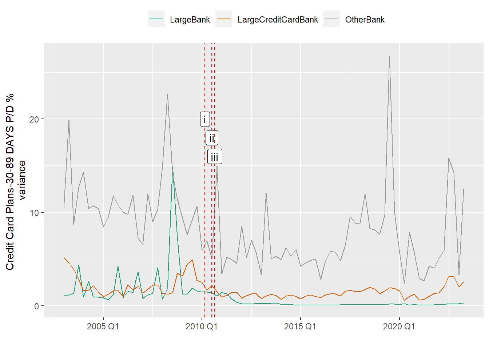
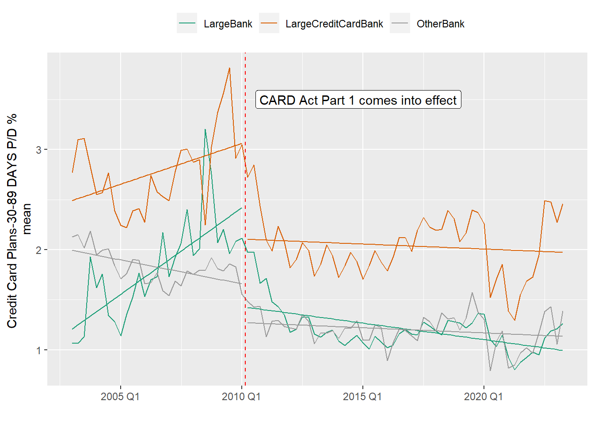
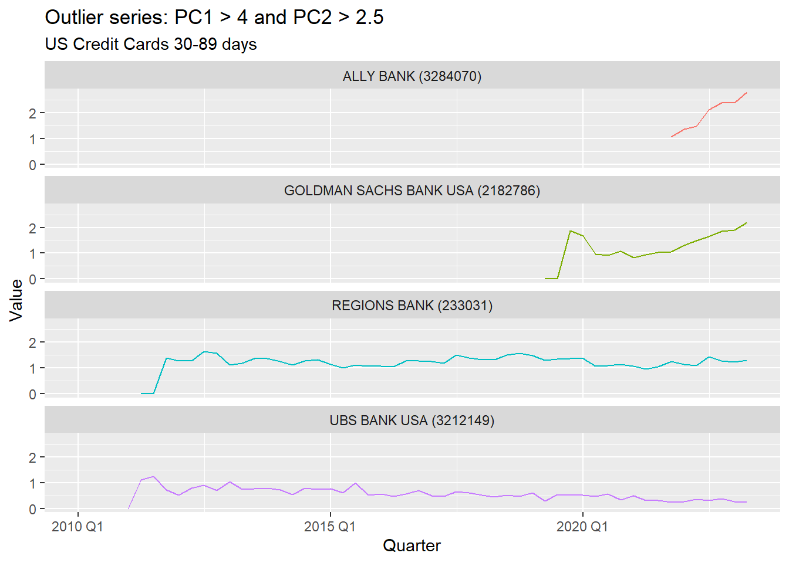
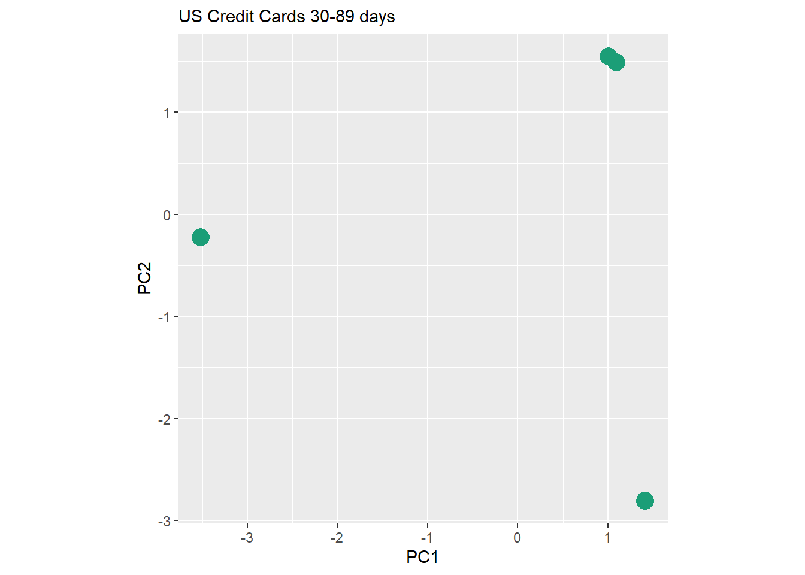
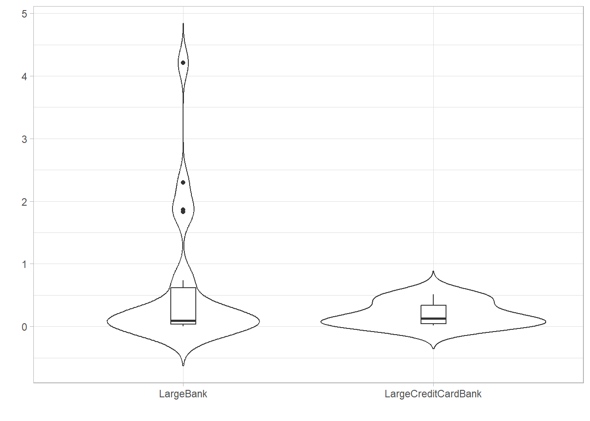
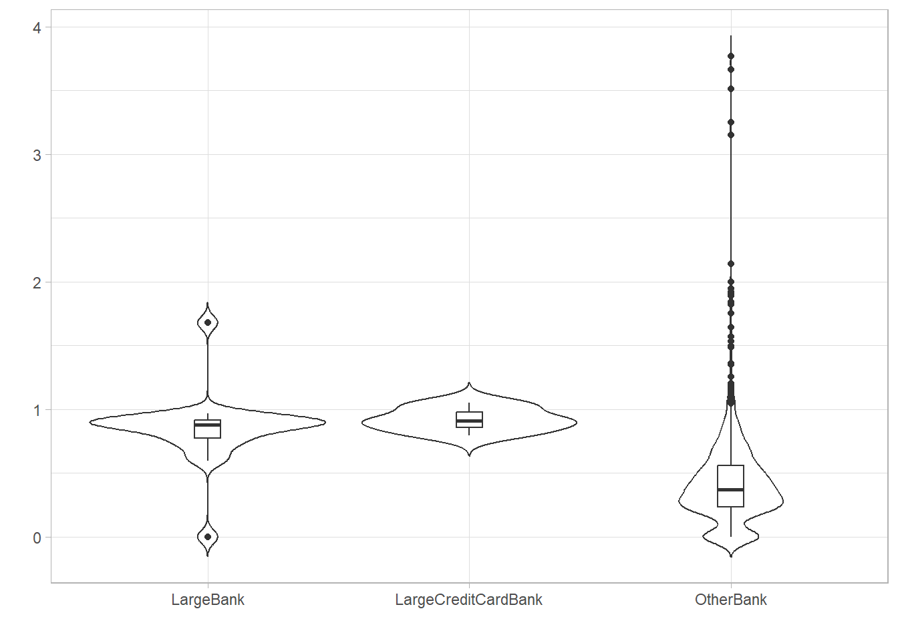
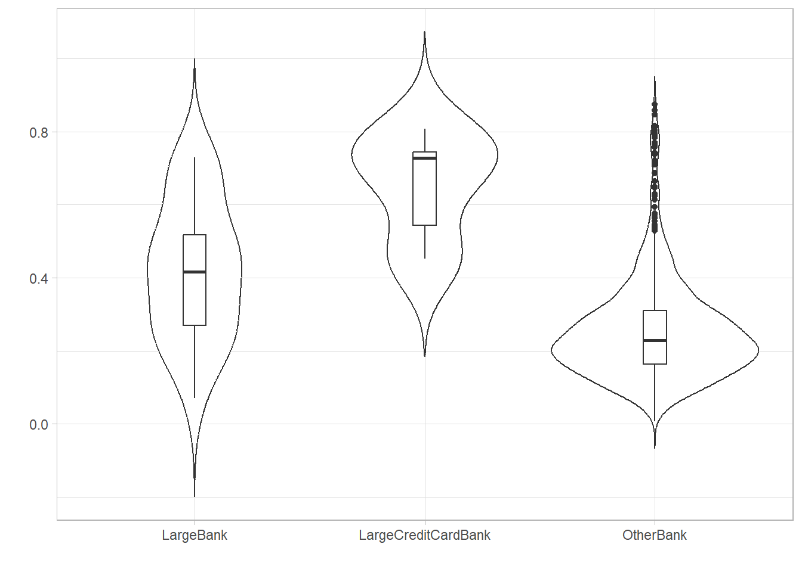
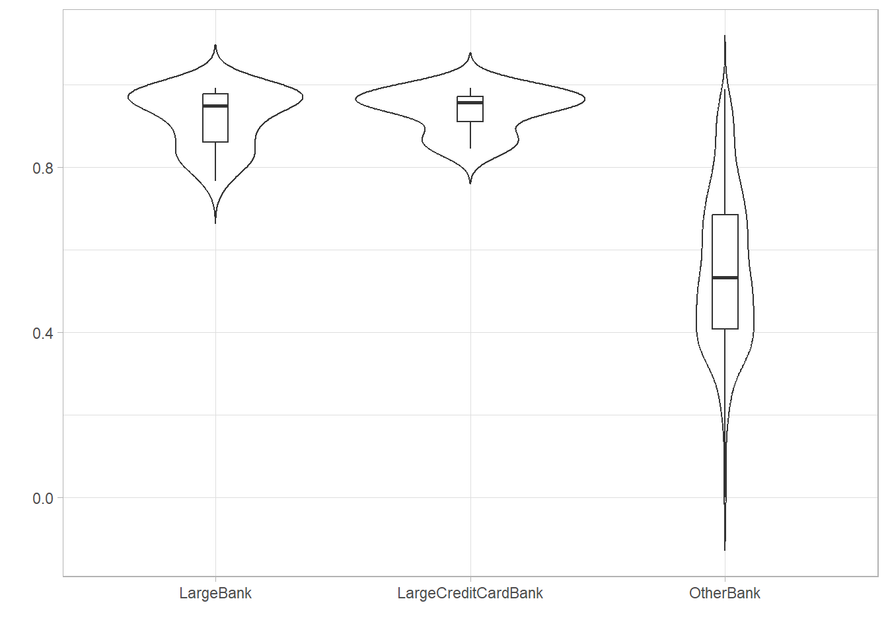
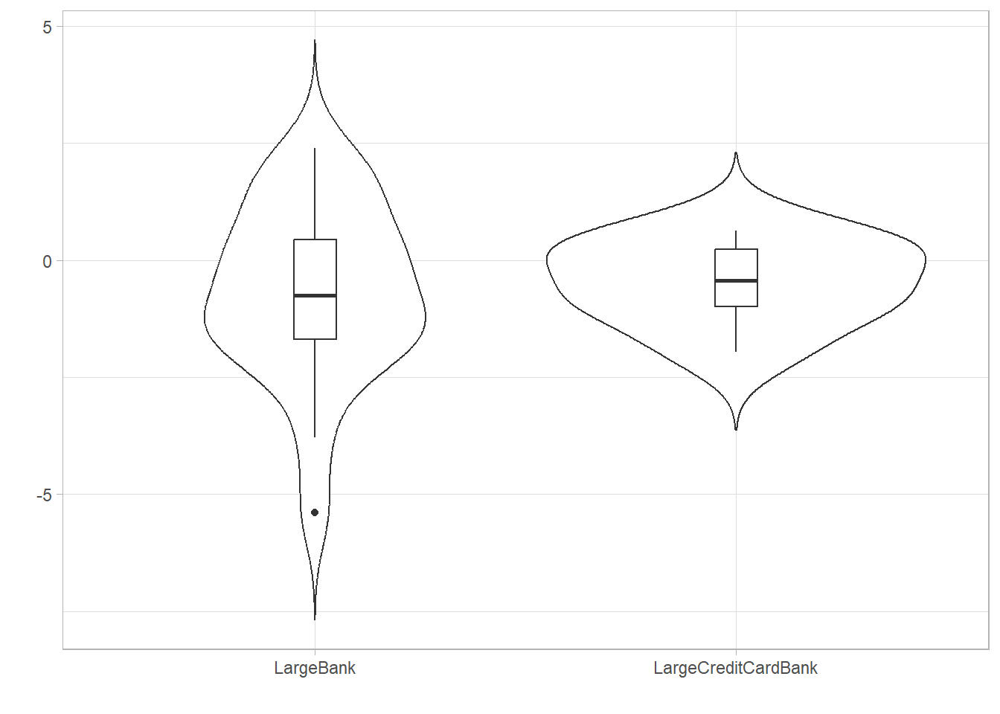
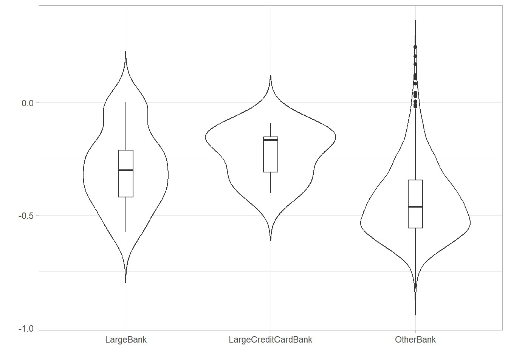

US banks are required to report quarterly financial data e.g., Balance Sheet and Income Statements, to the US Federal Financial Institutions Examination Council (FFIEC) who make this data publicly available in a consolidated format as a part of their Uniform Bank Performance Reporting (UBPR) regime. Data is available from 2002 Q4 FFIEC (2023).
We are interested in measures that will provide insights to Bank’s credit card business as shown in Table 2.1.
Loans to Individuals for Household, Family, and Other Personal Expenditures (I.E., Consumer Loans)(Includes Purchased Paper):Credit Cards
UBPRE263
Unused Commitments on Credit Cards as a percent of Total Assets
UBPRE425
Credit Card Loans, % Gross LN&LS
UBPRE889
Credit Card Loans, % Tier 1 Capital plus Allowance
UBPRE521
Credit Card Plans-90+ Days P/D %
UBPRE522
Credit Card Plans-Nonaccrual %
UBPRE523
90 days+ Nonaccrual (UBPRE521+UBPRE522)
UBPRE524
Credit Card Plans-30-89 DAYS P/D %
UBPRE411
Credit Card Plans Net Losses (%)
2.1 Measure of portfolio quality
To measure quality we can use the proportion of credit cards that are deliquient in the portfolio. This is the sum of UBPRE523 and UBPRE524; accounts that are accruing payments but are overdue by 30 day+ or are in non-accrual status i.e. non-performing loans.
However, given we are interested in the impact of a partnership, using the UBPRE524 Credit Card Plans-30-89 DAYS P/D % measure is ideal as it gives us the earliest indicator of delinquency.
2.2 Bank Peer Groups
The scope of Banks included in our analysis is not limited to the banks involved in credit card partnerships. We can use data from FFIEC to add information about their peers i.e. other banks that are similar.
Table 2.2 details 3 peer groups. National (US-wide) Credit card partnerships occur with Banks in the Large Bank and Large Credit Card Bank groups, membership of these peer groups are defined by FFIEC (See Section 3.1 for full list of Banks in each peer group) (FFIEC 2023).
A Large Bank like CITIBANK will have a multiple businesses: household mortgages and credit cards; trading desks; investment banking; private wealth customers and more. In constrast specialised credit card business like BARCLAYS US are credit card only businesses. Consequently, we expect to see the peer groups react differently to external factors, or exhibit different internal dynamics and risk profiles.
Code
overdue30to89 <-credit_card.overdue_3089()target_label <-"Credit Card Plans-30-89 DAYS P/D %"bank_scope <- overdue30to89 |>as_tibble() |>group_by(BankName,BankType) |>summarise(total_bal =sum(abs(Value),na.rm=T)) |>filter(!(is.na(total_bal)|total_bal==0))grp <-tibble(BankType ='LargeBank', FFIEC_Id ='1', Criteria ='Insured commercial banks having assets greater than $100 billion', Examples ='CITIBANK, JPMORGAN CHASE BANK, MORGAN STANLEY') |>add_row(BankType ='LargeCreditCardBank', FFIEC_Id ='201', Criteria ='Large Credit Card Banks: Credit card specialty banks having assets greater than $ 3 billion', Examples ='BARCLAYS BANK, SYNCHRONY BANK, DISCOVER BANK')|>add_row(BankType ='OtherBank', FFIEC_Id ='', Criteria ='Other - all other Banks that have reported UBPRE524', Examples ='')bank_scope |>group_by(BankType) |>summarise(Number =n()) |>right_join(grp) |> knitr::kable(format ="html")
Table 2.2: Number of Banks in each peer group
BankType
Number
FFIEC_Id
Criteria
Examples
LargeBank
22
1
Insured commercial banks having assets greater than $100 billion
CITIBANK, JPMORGAN CHASE BANK, MORGAN STANLEY
LargeCreditCardBank
7
201
Large Credit Card Banks: Credit card specialty banks having assets greater than $ 3 billion
BARCLAYS BANK, SYNCHRONY BANK, DISCOVER BANK
OtherBank
1257
Other - all other Banks that have reported UBPRE524
Note
Why are there thousands of Banks? The US Banking system grew out of 19th-century regulations that restricted where banks could operate. This resulted in a very localised Banking market. Today big banks such as JPMorgan Chase, Bank of America, Citigroup and Wells Fargo, dominate the industry but there are still about 4,100 US Banks compared with 353 in Britain and 261 in Germany (Economist 2023).
2.3 Data Period
Regulation implemented in 2010 had a material impact on the credit card market (CFPB 2013) and (Jambulapati and Stavins 2013). It’s worth noting that Jambulapati and Stavins (2013) highlight that regulation coincided with the 2008 financial crisis and recession, making it difficult to fully assert causation (2013).
The regulations introduced were:
Credit Card Accountability Responsibility and Disclosure (CARD) Act of 2009 which had a staggered implementation in February and August 2010. This Act has led to stricter lending criteria e.g., income and credit history checks, as it requires Banks to assess whether a potential borrower has the means to repay. High-risk borrowers like those under 21, have additional restrictions (CFPB 2013).
Regulation Z, or the Truth in Lending Act (TILA), focuses on ensuring transparency and fairness in lending practices. For credit cards this means Banks have to provide full disclosure of the terms and conditions of a credit agreement (CFPBb 2023).
We can see the impact in Figure 2.1 which plots a linear trend for Credit Card Plans-30-89 DAYS P/D % (UBPRE524) for each peer group. Based on Figure 2.1 (c) there was increasing delinquency for Large Banks and Large Credit Card Banks before regulation, but post regulation the trend has reversed and is now trending down.
For our analysis we will focus on the post regulatory period. This does mean that we will reduce our analysis to credit card partnerships post regulation, however, this is more relevant for commenting on future partnership deals.
(a) Bank Type have different intercepts and data patterns

(b) Variance pre and post Regulation (i) - CARD Act part 1 (ii) - Regulation Z and (iii) Card Act part 2 The variance for Large Banks and Large Credit Card Banks have reduced post regulatory changes.

(c) Linear trend pre and post Regulation.
Figure 2.1: Impact of Regulation
2.4 Bank Outliers
As we are dealing with time series data, we need to identify banks where their individual data characteristics are markedly different from those of its peers.
Figure 2.2 takes the approach from Hyndman and Athanasopoulos (2021) who use Principal Components Analysis (PCA) on a set of calculated statistical features such as lumpiness, stability and Seasonal-Trend decomposition using LOESS (STL) (2021).
(a) PCA for Large and Large Credit Card Banks using features: lumpiness, stability and seasonal. PC1 represents the most variation in the data and PC2 represents the second most variation in the data.

(b) Data series for Banks with PC1 > 4 and PC2 > 2.5
Figure 2.2: Outlier Detection using PCA
Interestingly, all the banks in Figure 2.2 (b) started or re-started (as was the case for Regions Bank) their credit card businesses after 2010 Q1. With the exception of Ally Bank the series start from 0 and quickly jump after one or two quarters. This is expected as it takes 30+ days for credit cards to become deliquient.
If we drop the first 2 non-zero quarters and re-run the PCA (see Figure 2.3) the banks are no longer outliers - indicating that it was that initial jump that was unusual.
Code
outlier_df <- overdue30to89_lbanks |>filter(IDRSSD %in% outliers$IDRSSD, Value !=0) |> tsibble::group_by_key() |>slice(3:n())all_f_outliers <- outlier_df |>features(Value, feature_set(tags =c("lumpiness","stability","seasonal")))all_f_outliers |>mutate_if(is.numeric, replace_na, -1) |>#where we could not calc a feature valueselect(-c(IDRSSD,BankName, Measure, Label, Description, BankType)) |>prcomp(scale =TRUE) |> broom::augment(all_f_outliers) |>plot_pcs()

Figure 2.3: PCA of outliers after their first 2 non-zero quarters are dropped
The Other Banks peer group has been added for interest.
Code
plot_feature_violin <-function(data, feature_name) { data |>ggplot(aes(x = BankType, y =!!as.name(feature_name))) +geom_violin(trim =FALSE) +geom_boxplot(width =0.1, fill ="white") +theme_light() +labs(x ="", y ="")}plot_feature_violin(all_ftbanks, "var_tiled_var")plot_feature_violin(all_ftbanks, "var_tiled_mean")plot_feature_violin(all_ftbanks, "seasonal_strength_year")plot_feature_violin(all_ftbanks, "trend_strength")plot_feature_violin(all_ftbanks, "linearity")plot_feature_violin(all_ftbanks, "stl_e_acf1")plot_feature_violin(all_ftbanks, "nsdiffs")

(a) Lumpiness - variance of the variances based on tiled (non-overlapping) windows

(b) Stability - the variance of the means based on tiled (non-overlapping) windows

(c) STL decomposition Seasonal Strength - 0 is week (non-seasonal), 1 is strong

(d) STL decomposition Trend Strength - 0 is week (no trend), 1 is strong

(e) Linearity - values around 0 indicate the series is linear

(f) Autocorrelation - first autocorrelation coefficient
(g) Minimum number of differences necessary to obtain a stationary time series
Figure 2.4: Exploring Statistical Features (Post Regulatory environment)
Figure 2.4 (a): Other Banks are lumpy. Also we can see from Figure 2.1 (b) that the variance of Other Banks did not significantly reduce, we still see lumpiness post regulatory changes (though they were subject to the same regulation).
Figure 2.4 (c)Large Credit Card Banks are more seasonal. Figure 2.5 shows both Large Banks and Large Credit Card Banks peak in Q3. This is surprising as I assumed events like Black Friday, Thanksgiving and Christmas would have a noticable impact in Q4 or Q1.
Figure 2.4 (f) Autocorrelation coefficient close to 0 indicates weak or no linear relationship between lagged values. Of note the coefficients are negative indicating a tendency for a short-term reversal. This can be seen in Figure 2.1 (a) where the values oscillate.
Figure 2.4 (g)Large Credit Card Banks is not stationary. Performing a difference i.e. to get the quarterly change in UBPRE524, makes the series stationary.
---title: "Bank Data"format: html---US banks are required to report quarterly financial data e.g., Balance Sheet and Income Statements, to the US Federal Financial Institutions Examination Council (FFIEC) who make this data publicly available in a consolidated format as a part of their Uniform Bank Performance Reporting (UBPR) regime. Data is available from 2002 Q4 @ffiec.We are interested in measures that will provide insights to Bank's credit card business as shown in @tbl-ccmeasures. ```{r}#| tbl-cap: "UBPR Credit Card Measures"#| label: tbl-ccmeasures#| warning: falsesource('functions.R')credit_card() |>distinct(Measure, Description) |>filter(str_detect(Description, "Credit|90 days")) |> knitr::kable(format ="html")```## Measure of portfolio qualityTo measure quality we can use the proportion of credit cards that are deliquient in the portfolio. This is the sum of UBPRE523 and UBPRE524; accounts that are accruing payments but are overdue by 30 day+ or are in non-accrual status i.e. non-performing loans. However, given we are interested in the impact of a partnership, using the UBPRE524 **Credit Card Plans-30-89 DAYS P/D %** measure is ideal as it gives us the earliest indicator of delinquency.## Bank Peer GroupsThe scope of Banks included in our analysis is not limited to the banks involved in credit card partnerships. We can use data from FFIEC to add information about their peers i.e. other banks that are similar. @tbl-peergrpcnt details 3 peer groups. National (US-wide) Credit card partnerships occur with Banks in the **Large Bank** and **Large Credit Card Bank** groups, membership of these peer groups are defined by FFIEC (See @sec-peers for full list of Banks in each peer group) [@ffiec].A Large Bank like CITIBANK will have a multiple businesses: household mortgages and credit cards; trading desks; investment banking; private wealth customers and more. In constrast specialised credit card business like BARCLAYS US are credit card only businesses. Consequently, we expect to see the peer groups react differently to external factors, or exhibit different internal dynamics and risk profiles. ```{r}#| tbl-cap: "Number of Banks in each peer group"#| label: tbl-peergrpcnt#| warning: falseoverdue30to89 <-credit_card.overdue_3089()target_label <-"Credit Card Plans-30-89 DAYS P/D %"bank_scope <- overdue30to89 |>as_tibble() |>group_by(BankName,BankType) |>summarise(total_bal =sum(abs(Value),na.rm=T)) |>filter(!(is.na(total_bal)|total_bal==0))grp <-tibble(BankType ='LargeBank', FFIEC_Id ='1', Criteria ='Insured commercial banks having assets greater than $100 billion', Examples ='CITIBANK, JPMORGAN CHASE BANK, MORGAN STANLEY') |>add_row(BankType ='LargeCreditCardBank', FFIEC_Id ='201', Criteria ='Large Credit Card Banks: Credit card specialty banks having assets greater than $ 3 billion', Examples ='BARCLAYS BANK, SYNCHRONY BANK, DISCOVER BANK')|>add_row(BankType ='OtherBank', FFIEC_Id ='', Criteria ='Other - all other Banks that have reported UBPRE524', Examples ='')bank_scope |>group_by(BankType) |>summarise(Number =n()) |>right_join(grp) |> knitr::kable(format ="html") ```::: {.callout-note}Why are there thousands of Banks? The US Banking system grew out of 19th-century regulations that restricted where banks could operate. This resulted in a very localised Banking market. Today big banks such as JPMorgan Chase, Bank of America, Citigroup and Wells Fargo, dominate the industry but there are still about 4,100 US Banks compared with 353 in Britain and 261 in Germany [@economist2023]. :::## Data PeriodRegulation implemented in 2010 had a material impact on the credit card market [@cfpb2013] and [@boston2014]. It's worth noting that @boston2014 highlight that regulation coincided with the 2008 financial crisis and recession, making it difficult to fully assert causation [-@boston2014].The regulations introduced were:1. Credit Card Accountability Responsibility and Disclosure (CARD) Act of 2009 which had a staggered implementation in February and August 2010. This Act has led to stricter lending criteria e.g., income and credit history checks, as it requires Banks to assess whether a potential borrower has the means to repay. High-risk borrowers like those under 21, have additional restrictions [@cfpb2013]. 2. Regulation Z, or the Truth in Lending Act (TILA), focuses on ensuring transparency and fairness in lending practices. For credit cards this means Banks have to provide full disclosure of the terms and conditions of a credit agreement [@cfpb2010z].We can see the impact in @fig-regulation which plots a linear trend for **Credit Card Plans-30-89 DAYS P/D %** (UBPRE524) for each peer group. Based on @fig-regulation-3 there was increasing delinquency for Large Banks and Large Credit Card Banks before regulation, but post regulation the trend has reversed and is now trending down.For our analysis we will focus on the post regulatory period. This does mean that we will reduce our analysis to credit card partnerships post regulation, however, this is more relevant for commenting on future partnership deals. ```{r}#| warning: false#| label: fig-regulation#| fig-cap: "Impact of Regulation"#| fig-subcap: #| - "Bank Type have different intercepts and data patterns"#| - "Variance pre and post Regulation <br>(i) - CARD Act part 1 (ii) - Regulation Z and (iii) Card Act part 2 <br>The variance for Large Banks and Large Credit Card Banks have reduced post regulatory changes."#| - "Linear trend pre and post Regulation."#| layout-ncol: 1reg_date_z <-as.Date("2010-07-01")reg_date_c1 <-as.Date("2010-02-22")reg_date_c2 <-as.Date("2010-08-22")group.colours <-c(LargeBank ="#1B9E77", "LargeBank/Before"="#1B9E77", "LargeBank/After"="#1B9E77", LargeCreditCardBank ="#D95F02","LargeCreditCardBank/Before"="#D95F02", "LargeCreditCardBank/After"="#D95F02", OtherBank ="#999999","OtherBank/Before"="#999999","OtherBank/After"="#999999")overdue30to89 |>filter(value_diff <=23) |>group_by(BankType) |>summarise(val_mean =mean(Value, na.rm=T)) |>autoplot(val_mean, aes(colour=BankType)) +geom_smooth(method ="lm", se =FALSE, show.legend = F, linewidth=.5) +scale_color_manual(values = group.colours)+theme(legend.position ="top",legend.title=element_blank()) +labs(y=glue("{target_label} \n mean"), x="")overdue30to89 |>filter(value_diff <=23) |>group_by(BankType) |>summarise(variance =var(Value)) |>autoplot(variance) +geom_vline(xintercept = reg_date_c1,linetype=2,colour="red", hjust =0.05) +annotate("label",label="i", x=reg_date_c1, y=20.0) +geom_vline(xintercept = reg_date_z,linetype=2,colour="red") +annotate("label",label="ii", x=reg_date_z, y=18.0) +geom_vline(xintercept = reg_date_c2,linetype=2,colour="red") +annotate("label",label="iii", x=reg_date_c2, y=16.0, hjust =-0.05) +labs(y=glue("{target_label} \n variance"), x="") +scale_color_manual(values = group.colours)+theme(legend.position ="top", legend.title=element_blank()) overdue30to89 |>filter(value_diff <=23) |>mutate(regulation =ifelse(as.Date(Quarter) < reg_date_c1, 'Before', 'After')) |>group_by(BankType, regulation) |>summarise(val_mean =mean(Value, na.rm=T)) |>autoplot(val_mean, aes(colour=BankType)) +geom_smooth(method ="lm", se =FALSE, show.legend = F,size=.5) +scale_color_manual(values = group.colours, breaks=c("LargeBank","LargeCreditCardBank","OtherBank"))+geom_vline(xintercept = reg_date_c1,linetype=2,colour="red")+annotate("label",label="CARD Act Part 1 comes into effect", x=reg_date_c1, y=3.5, hjust =-0.05) +labs(y=glue("{target_label} \n mean"), x="") +theme(legend.position ="top", legend.title=element_blank())```## Bank Outliers {#sec-outliers}As we are dealing with time series data, we need to identify banks where their individual data characteristics are markedly different from those of its peers.@fig-outliers takes the approach from @Hyndman2021 who use Principal Components Analysis (PCA) on a set of calculated statistical features such as lumpiness, stability and Seasonal-Trend decomposition using LOESS (STL) [-@Hyndman2021]. ```{r}#| warning: false#| error: false#| label: fig-outliers #| fig-cap: "Outlier Detection using PCA"#| fig-subcap:#| - "PCA for <span style='color:#1B9E77'>Large</span> and <span style='color:#D95F02'>Large Credit Card</span> Banks using features: lumpiness, stability and seasonal. PC1 represents the most variation in the data and PC2 represents the second most variation in the data."#| - "Data series for Banks with PC1 > 4 and PC2 > 2.5"#| layout-ncol: 1plot_pcs <-function(pcs) { pcs |>ggplot(aes(x = .fittedPC1, y = .fittedPC2, colour = BankType)) +geom_point(size =5) +theme(aspect.ratio =1,plot.title =element_markdown()) +labs(subtitle ="US Credit Cards 30-89 days",x ="PC1",y ="PC2")+theme(legend.position="none") +scale_color_manual(values = group.colours) }plot_outlier <-function(data, outliers, value_name ="Value") { data |>filter(IDRSSD %in% outliers$IDRSSD) |>ggplot(aes(x = Quarter, y =!!as.name(value_name), col = BankName)) +geom_line() +facet_wrap(~BankName, ncol =1) +theme(legend.position ="none") +labs(y = target_label) }regulation_cutoff <-"2010 Q2"overdue30to89_post <- overdue30to89 |>filter_index(regulation_cutoff ~ .) overdue30to89_lbanks <- overdue30to89_post |>filter(BankType %in%c("LargeBank", "LargeCreditCardBank"))all_f <- overdue30to89_lbanks |>features(Value, feature_set(tags =c("lumpiness","stability","seasonal")))pcs <- all_f |>mutate_if(is.numeric, replace_na, -1) |>#where we could not calc a feature valueselect(-c(IDRSSD,BankName, Measure, Label, Description, BankType)) |>prcomp(scale =TRUE) |> broom::augment(all_f)pc1_threshold <-4pc2_threshold <-2.5plot_pcs(pcs)outliers <- pcs |>filter( (.fittedPC2 > pc2_threshold) | (.fittedPC1 > pc1_threshold)) |>select(IDRSSD) plot_outlier(overdue30to89_lbanks, outliers)```Interestingly, all the banks in @fig-outliers-2 started or re-started (as was the case for Regions Bank) their credit card businesses after 2010 Q1. With the exception of Ally Bank the series start from 0 and quickly jump after one or two quarters. This is expected as it takes 30+ days for credit cards to become deliquient. If we drop the first 2 non-zero quarters and re-run the PCA (see @fig-outliers-corrected) the banks are no longer outliers - indicating that it was that initial jump that was unusual.```{r}#| warning: false#| error: false#| label: fig-outliers-corrected#| fig-cap: "PCA of outliers after their first 2 non-zero quarters are dropped"outlier_df <- overdue30to89_lbanks |>filter(IDRSSD %in% outliers$IDRSSD, Value !=0) |> tsibble::group_by_key() |>slice(3:n())all_f_outliers <- outlier_df |>features(Value, feature_set(tags =c("lumpiness","stability","seasonal")))all_f_outliers |>mutate_if(is.numeric, replace_na, -1) |>#where we could not calc a feature valueselect(-c(IDRSSD,BankName, Measure, Label, Description, BankType)) |>prcomp(scale =TRUE) |> broom::augment(all_f_outliers) |>plot_pcs()``````{r}#| warning: false#| error: false#apply 1. regulatory cutoff, 2. fixed outliers.final_df <- overdue30to89_post |>filter(!IDRSSD %in% outliers$IDRSSD) |>add_row(outlier_df) |>fill_gaps()all_ftbanks <- final_df |>features(Value, feature_set(tags =c("lumpiness","stability","seasonal")))```## Exploration of Statistical Features {#sec-feature-explore}@fig-lfeature shows the features from @sec-outliers that we can use to explore the characteristics of each peer group (see [@tsfeatures]). The *Other Banks* peer group has been added for interest. ```{r}#| warning: false#| error: false#| label: fig-lfeature#| fig-cap: "Exploring Statistical Features (Post Regulatory environment)"#| fig-subcap:#| - "Lumpiness - variance of the variances based on tiled (non-overlapping) windows"#| - "Stability - the variance of the means based on tiled (non-overlapping) windows"#| - "STL decomposition Seasonal Strength - 0 is week (non-seasonal), 1 is strong"#| - "STL decomposition Trend Strength - 0 is week (no trend), 1 is strong"#| - "Linearity - values around 0 indicate the series is linear"#| - "Autocorrelation - first autocorrelation coefficient"#| - "Minimum number of differences necessary to obtain a stationary time series"#| layout-ncol: 2plot_feature_violin <-function(data, feature_name) { data |>ggplot(aes(x = BankType, y =!!as.name(feature_name))) +geom_violin(trim =FALSE) +geom_boxplot(width =0.1, fill ="white") +theme_light() +labs(x ="", y ="")}plot_feature_violin(all_ftbanks, "var_tiled_var")plot_feature_violin(all_ftbanks, "var_tiled_mean")plot_feature_violin(all_ftbanks, "seasonal_strength_year")plot_feature_violin(all_ftbanks, "trend_strength")plot_feature_violin(all_ftbanks, "linearity")plot_feature_violin(all_ftbanks, "stl_e_acf1")plot_feature_violin(all_ftbanks, "nsdiffs")```1. @fig-lfeature-1: *Other Banks* are lumpy. Also we can see from @fig-regulation-2 that the variance of *Other Banks* did not significantly reduce, we still see lumpiness post regulatory changes (though they were subject to the same regulation). 2. @fig-lfeature-3 *Large Credit Card* Banks are more seasonal. @fig-season shows both *Large Banks* and *Large Credit Card Banks* peak in Q3. This is surprising as I assumed events like Black Friday, Thanksgiving and Christmas would have a noticable impact in Q4 or Q1. 3. @fig-lfeature-4 and @fig-lfeature-5 indicates a strong linear trend for *Large Banks* and *Large Credit Card Banks*.4. @fig-lfeature-6 Autocorrelation coefficient close to 0 indicates weak or no linear relationship between lagged values. Of note the coefficients are negative indicating a tendency for a short-term reversal. This can be seen in @fig-regulation-1 where the values oscillate.5. @fig-lfeature-7 *Large Credit Card Banks* is not stationary. Performing a difference i.e. to get the quarterly change in UBPRE524, makes the series stationary. ```{r}#| warning: false#| error: false#| label: fig-season#| fig-cap: "Quarterly Seasonal Subseries. The blue horizontal lines indicate the means for each quarter."final_df |>group_by(BankType) |>summarise(mean =mean(Value, na.rm=T)) |>gg_subseries() +labs(y=glue("{target_label} \n mean"))``````{r}#| warning: false#| error: false#| label: fig-acf#| fig-cap: "ACF on original value (a) and first difference value (b)"#| fig-subcap:#| - ""#| layout-ncol: 2acf_df <- final_df |>filter(BankType %in%c("LargeBank", "LargeCreditCardBank")) |>group_by(BankType)|>summarise(mean_val =mean(Value, na.rm=T)) |>mutate(value_diff =difference(mean_val))acf_df |>ACF(x=mean_val,lag_max =42) |>autoplot()acf_df |>ACF(x=value_diff,lag_max =42) |>autoplot()```## SummaryFrom the original FFIEC dataset we have:Selected1. Target measure: *Credit Card Plans-30-89 DAYS P/D %* (UBPRE524).2. Banks: All *Large Banks* and *Large Credit Card* Banks.3. Date Period: Start from 2010 Q2.Removed4. Outlier data points: first 2 quarters from banks in @fig-outliers-2.Transformed5. Target measure to first difference value.## References